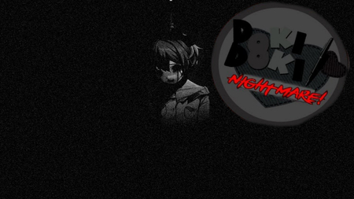

DDLC Nightmare
Toda escolha que você faz tem uma consequência, seja boa ou ruim. De um lado, poderia ser a melhor coisa que já aconteceu com você em sua vida, mas e se não? Feito por ocasião de um desafio de modificação programada, este mod foi criado em apenas 9 horas. Você está preparado para um pesadelo?
⬇ Download